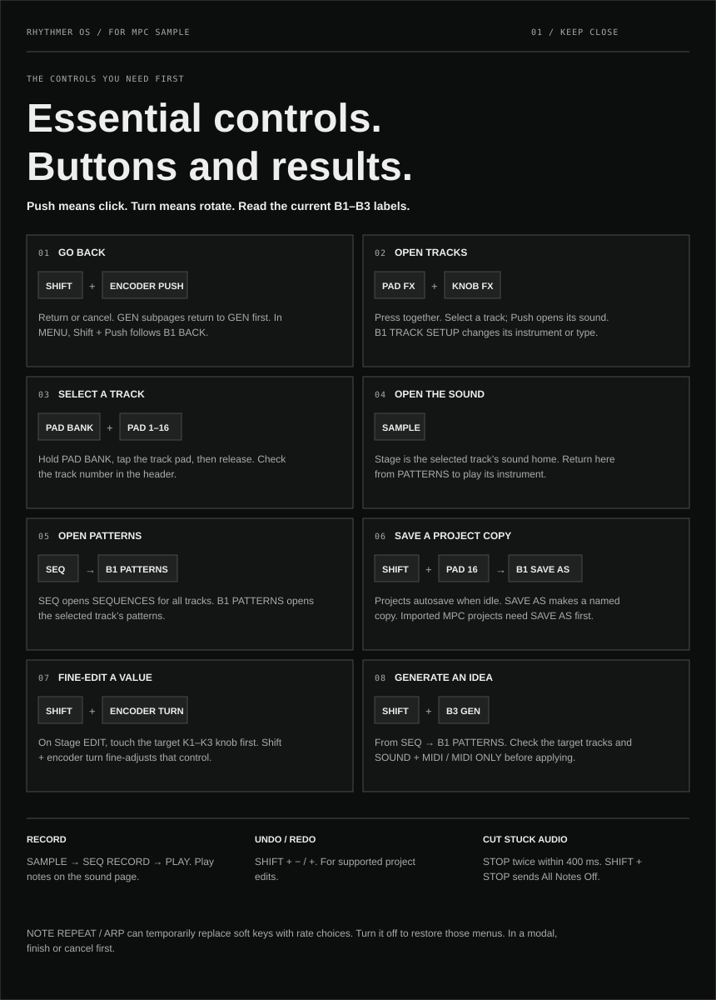

These instructions use the 0.2.0 controls. Check the selected track number and current button labels before each action.
RHYTHMER OS 0.2.0 — Essential controls
PUSH = press the large encoder. TURN = rotate it. B1–B3 are the three screen buttons; K1–K3 are the knobs below the screen. Use the currently displayed labels.

| Do this | Controls | Check afterwards |
|---|---|---|
| Back / cancel | SHIFT + encoder push | One level back; a confirmation is cancelled. MENU follows B1 BACK. |
| Fine-adjust | Touch K1–K3, then SHIFT + encoder turn | The last touched knob's value changes. This is not Back. |
| Open TRACKS | PAD FX + KNOB FX together | Track grid / mix; B1 TRACK SETUP when repeat/arp is off |
| Select track 1–16 | Hold PAD BANK, tap its pad, release | Header's track number changes |
| Play notes / drums | SAMPLE | Pads play the selected instrument |
| Choose a pattern on one track | SEQ → B1 until PATTERNS | Pads choose that track's patterns |
| Launch across tracks | SEQ → B1 until SEQUENCES | Pads launch a sequence number across tracks |
| Open Step Edit | SHIFT + SEQ | Step editor for the selected track/pattern |
| Record | SAMPLE → SEQ RECORD → PLAY | Wait for count-in, play notes; SEQ RECORD again leaves recording |
| Generate | PATTERNS → SHIFT + B3 GEN | Check target and NEW SOUNDS / KEEP SOUND(S) before APPLY |
| Save a project copy | SHIFT + Pad 16 → B1 SAVE AS → B3 SAVE | Name saved; wait for SAVED |
| Undo / redo | SHIFT + − / + | Supported project edit is restored/reapplied |
| Cut current audio | STOP twice within 400 ms | Current notes/tails stop; a new note or PLAY resumes |
| Open settings | SHIFT + Pad 8 | Main Settings; K1 FEATURES selects Basic/Full |
A single PAD BANK tap changes the pad bank; a held track-selection gesture does not. NOTE REPEAT/ARP can replace soft keys with repeat rates. Modal screens must be finished or cancelled before returning to the underlying page.